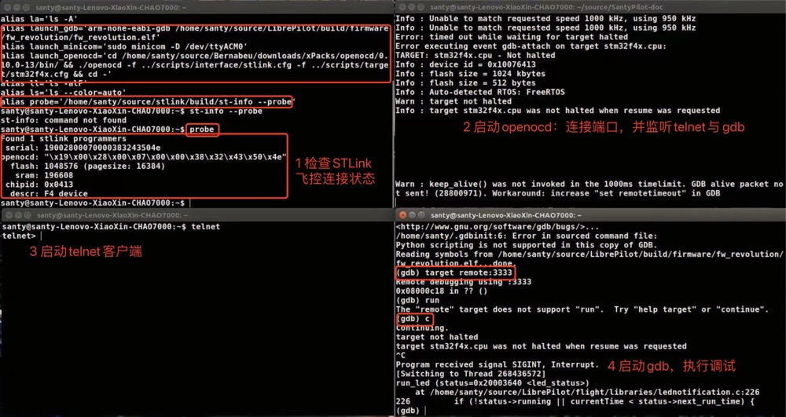

Linux（推荐）
环境要求
实际版本可有不同，欢迎补充
lsb_release -a
stributor ID: Ubuntu
Description: Ubuntu 16.04.6 LTS
Release: 16.04
Codename: xenial
下载三方库与构建工具链
添加工具仓，借用librepilot的PPA（Personal Package Archive）仓库
sudo add-apt-repository ppa:librepilot/tools -y
sudo apt-get update -q
下载构建工具与三方库
sudo apt-get install build-essential curl ccache debhelper git-core git-doc flex graphviz bison libudev-dev libusb-1.0-0-dev libsdl1.2-dev python libopenscenegraph-dev qt5-default qttools5-dev-tools libqt5svg5-dev qtdeclarative5-dev qml-module-qtquick-controls libqt5serialport5-dev qtmultimedia5-dev qtscript5-dev libqt5opengl5-dev qml-module-qtquick-controls qml-module-qtquick-dialogs qml-module-qtquick-xmllistmodel qml-module-qtquick-localstorage qml-module-qtquick-particles2 qml-module-qtquick-window2 qml-module-qtquick2 libosgearth-dev openscenegraph-plugin-osgearth
下载SantyPilot代码并下载其他工具链
git clone -b dev git@github.com:SantyPilot/SantyPilot.git
cd SantyPilot
make arm_sdk_install # arm cross toolchain
make qt_sdk_install # qt 5.9.0
make gtest_install # unit-test
make ccache_install # speed up compile
QT安装包文件较大，下载可能较慢，可以用加速器下载链接
将安装包qt_opensource-linux-x64-5.9.0.run下载到download目录下
执行如下命令安装
sudo chmod +x qt-opensource-linux-x64-5.9.0.run
./qt-opensource-linux-x64-5.9.0.run --script SantyPilot/make/tool_install/qt-install.qs
构建
并发构建地面站软件
make -j8 gcs
构建SantyPilot通信机制uavobjects
make -j8 uavobjects
构建整个固件entire flash(ef = bl + fw)
make -j8 mist
出现构建报错，您可以在构建命令里添加V=1选项，打印报错命令，贴给我们
make -j8 V=1 mist
需要指出的是，云雾mist系列飞控套件正在测评中
生成的地面站，飞控软件可以在build目录下找到
烧录
推荐您使用如下命令安装st-flash，st-info工具
make stm32flash_install
并添加SantyPilot/tools/stm32flash/build 环境变量方便使用
用st-info检查连接状态,运行
st-info --probe
如果可以返回设备连接信息，说明系统连接状态正常
推荐使用st-flash，把整个固件（entire flash）烧录到STM32F4 flash程序起始地址
st-flash --reset write build/firmware/ef_revolution/ef_revolution.bin 0x08000000
为了方便，您可以用alias简化命令行
alias flash_image='st-flash --reset write build/firmware/ef_revolution/ef_revolution.bin 0x08000000'
于是，flash_image可以代指整个命令
调试
调试原理：
openocd与STLink-STM32 PC端口连接，作为telnet服务器
解析并处理telnet客户端发来的指令（如reset, start, halt等）
同时openocd作为gdb-server处理gdb调试指令（如break, watch等）
您可以在根目录下执行下面命令，本地下载解压openocd
make openocd_install
此时openocd可执行文件解压缩到tools文件夹下，您可配置环境变量
或使用alias简化命令行操作，参考上文
确认openocd可用
openocd -v
Open On-Chip Debugger 0.9.0 (2018-01-24-01:05)
Licensed under GNU GPL v2
For bug reports, read
http://openocd.org/doc/doxygen/bugs.html
用STLinkV2设备连接飞控SWD口，另一端连接到PC USB端口
启动OpenOCD
openocd -f SantyPilot/flight/Project/OpenOCD/stlink.cfg -f SantyPilot/flight/Project/OpenOCD/stm32f4x.cfg
Open On-Chip Debugger 0.11.0
Licensed under GNU GPL v2
For bug reports, read
http://openocd.org/doc/doxygen/bugs.html
WARNING: interface/stlink-v2-1.cfg is deprecated, please switch to interface/stlink.cfg
Info : auto-selecting first available session transport "hla_swd". To override use 'transport select <transport>'.
Info : The selected transport took over low-level target control. The results might differ compared to plain JTAG/SWD
Info : Listening on port 6666 for tcl connections
Info : Listening on port 4444 for telnet connections
Info : clock speed 2000 kHz
Info : STLINK V2J37M27 (API v2) VID:PID 0483:374B
Info : Target voltage: 3.240865
Info : stm32g0x.cpu: hardware has 4 breakpoints, 2 watchpoints
Info : starting gdb server for stm32g0x.cpu on 3333
Info : Listening on port 3333 for gdb connections
新打开一个终端，运行telnet命令，启动客户端，用来发送基本指令
并在telnet状态下，和openocd建立连接
telnet
telnet> o localhost 4444
此时再新打开一个终端 启动gdb，并在gdb状态下和gdb-server(openocd)连接
arm-none-eabi-gdb SantyPilot/build/firmware/fw_revolution/fw_revolution.elf
gdb> target remote: 3333
如果您是初学者，我们非常推荐这种方式调试开发，一方面商用友好，另外熟练下来
命令行操作比IDE点选要快很多，而且Linux系统对三方库管理也相对稳定
|  |
仿真
您可以用如下命令构建仿真程序
make -j8 simposix
Windows
Windows下gcs的debug版本会出现闪退的情况，初步排查和win10显卡驱动有关 不推荐Windows系统开发
环境要求
Win7,Win8,Win10
下载三方库与构建工具链
您可以在链接下载i686（32bit）SYS2，并安装
其中包含了GNU构建工具链，必要的命令行工具，以及pacman包管理系统
打开MSYS2终端工具，添加pacman三方库地址，这里使用librepilot提供的pacman地址
echo "[librepilot-mingw]" >> /etc/pacman.conf
echo "SigLevel = Optional TrustAll" >> /etc/pacman.conf
echo "Server = http://download.librepilot.org/repo/mingw" >> /etc/pacman.conf
可以打开地址http://download.librepilot.org/repo/mingw查看其中的包文件
然后打开MINGW32终端，更新配置并下载所需三方库，其中--needed表示若有新版，不更新覆盖本地旧版本
pacman -Sy
pacman -S --needed git unzip tar
pacman -S --needed mingw-w64-i686-toolchain
pacman -S --needed mingw-w64-i686-ccache
pacman -S --needed mingw-w64-i686-ntldd
pacman -S --needed mingw-w64-i686-qt5
pacman -S --needed mingw-w64-i686-SDL
pacman -S --needed mingw-w64-i686-mesa
pacman -S --needed mingw-w64-i686-openssl
pacman -S --needed mingw-w64-i686-gdal-minimal
pacman -S --needed mingw-w64-i686-OpenSceneGraph
pacman -S --needed mingw-w64-i686-osgearth
pacman -S --needed mingw-w64-i686-graphite2
pacman -S --needed mingw-w64-i686-nghttp2
pacman -S --needed mingw-w64-i686-gst-plugins-base
pacman -S --needed mingw-w64-i686-gst-plugins-good
pacman -S --needed mingw-w64-i686-gst-plugins-bad
pacman -S --needed mingw-w64-i686-gst-plugins-ugly
pacman -S --needed mingw-w64-i686-gst-libav
下载代码并下载工具链
git clone -b dev git@github.com:SantyPilot/SantyPilot.git
cd SantyPilot
mingw32-make arm_sdk_install # arm cross toolchain
mingw32-make qt_sdk_install # qt 5.9.0
mingw32-make gtest_install # unit-test
mingw32-make ccache_install # speed up compile
需要注意的是，MINGW环境下，构建用mingw32-make
遇到QT下载慢的问题，可以参考Linux的解决办法，不赘述
构建
构建命令与Linux相同，可参考上文，此处不赘述
烧录
烧录可以使用st-utility UI版本烧录工具，将ef_revolution.bin烧录到0x08000000地址
这里和Linux的烧录方法本质相同，不赘述
调试
调试方案也是采用STLink硬件 + OpenOCD + GDB的方式
需要说的是，微软推出Windows Terminal，可以获得和Linux一样的操作体验
如果您更喜欢IDE方式，可以使用VSCode + json配置文件方式改进调试体验
这里提供一份launch.json调试脚本模板
{
// Use IntelliSense to learn about possible attributes.
// Hover to view descriptions of existing attributes.
// For more information, visit: https://go.microsoft.com/fwlink/?linkid=830387
"version": "0.2.0",
"configurations": [
{
"type": "cppdbg",
"request": "launch",
"name": "debug santypilot",
"program": "E:\\SantyPilot\\build\\firmware\\fw_revolution\\fw_revolution.elf",
"miDebuggerServerAddress": "127.0.0.1:3333",
"cwd":"E:\\SantyPilot",
"miDebuggerPath":"E:\\SantyPilot\\tools\\gcc-arm-none-eabi-4_9-2015q2\\bin\\arm-none-eabi-gdb.exe"
}
]
}
仿真
构建命令和Linux相同
开发规范
希望您遵守如下开发规范
工具安装
make doxygen_install # win: mingw32-make
make uncrustify_install
开发流程
您Fork一份到本人仓库，单一功能开发或BUG修复完成后，
先提交到本人仓库，再提交Push Request(PR)到SantyPilot主仓
英文说明功能，场景，最好附上自测截图，团队内开发review代码后合入
优秀代码合入将会收到红包奖励
编码规范
希望您使用英文注释，简单说清含义即可
另外，推荐您遵守Google Code Style